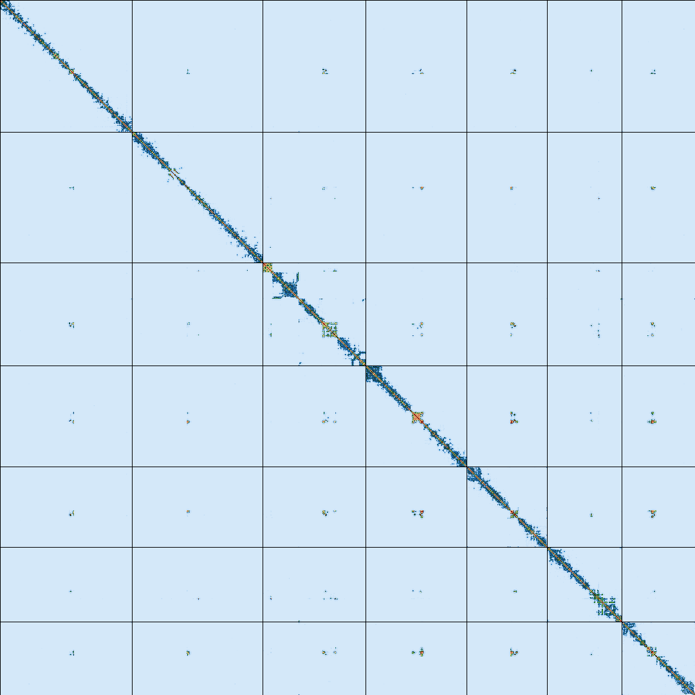

Scaffolding com Hi-C¶
Resumo
Tutorial prático de scaffolding de genomas a partir de dados de Hi-C. Nele você verá o pipeline completo: alinhamento, scaffolding, construção do mapa de contato, edição do mapa, exportação e avaliação.
Autor: Dr. Leonardo C. J. Corvalan
Instituição: Laboratório de Genética & Biodiversidade (LGBio), ICB/UFG
Contato: lcjocorvalan@gmail.com
Última atualização: novembro de 2026
Objetivos de aprendizagem¶
Ao final deste curso, você será capaz de:
- Realizar o scaffolding de um genoma
- Avaliar a qualidade do scaffolding
- Criar mapas de contato e editá-los
- Exportar o resultado em formato FASTA
Glossário rápido¶
| Termo | O que significa |
|---|---|
| Hi-C | Técnica que captura quais regiões do DNA estão próximas dentro do núcleo celular. Regiões próximas no espaço tendem a estar próximas no genoma. |
| Contig | Trecho contínuo de DNA montado a partir das reads, sem lacunas (N) entre eles. |
| Scaffold | Conjunto de contigs ordenados e orientados, separados por lacunas (N). |
| Mapa de contato | Matriz que mostra quantas vezes cada par de regiões do genoma aparece junto nos dados Hi-C. |
Carga horária estimada¶
Cerca de 3 horas
Pré-requisitos¶
| Item | Detalhes |
|---|---|
| Curso anterior | Bash / Linux para bioinformática |
| Biologia molecular | Conceitos de sequenciamento, genoma, contig e scaffold |
| Softwares | SRA Toolkit, bwa-mem2, samtools, PicardCommandLine, QUAST, YaHS, Pretext |
| Recursos | Servidor Linux com ≥ 32 GB de RAM, ≥ 16 threads e ≥ 50 GB de armazenamento |
Programas no computador pessoal
A etapa de visualização exige a instalação local do programa PretextView. Veja as instruções na Etapa 6.
Compatibilidade com outros servidores
Este pipeline foi desenvolvido e testado no servidor de Bioinformática do LGBio (ICB/UFG). Em outro ambiente, podem ser necessários ajustes em caminhos de instalação, gerenciadores de ambiente (conda, module load), versões de software e parâmetros de memória e threads.
Dica para iniciantes
As variáveis declaradas na Etapa 0 existem apenas no terminal em que foram criadas. Se você fechar o terminal ou trocar de sessão, declare-as novamente antes de continuar.
Dados do exercício¶
Os dados utilizados nesse tutorial foram obtidos do genomas Athalia rosae (Turnip Sawfly; Arhropoda; Insecta; Hymenoptera; Athaliidae), no qual os dados HiC foram produzido utilizado o kit Dovetail Hi-C kit (enzimas de restrição ^GATC,G^ANTC,C^TNAG,T^TAA) . Projeto de origem: PRJEB45200.
Referência
Liam M. Crowley & Gavin R. Broad.The genome sequence of the Turnip Sawfly, Athalia rosae(Linnaeus, 1758). Wellcome Open Research 2023 Feb 7; 8:87 . doi: 10.12688/wellcomeopenres.18993.1
Etapa 0 — Obtenção dos dados e declaração de variáveis¶
Os dados estão disponíveis no ENA e no SRA. Aqui usamos o fastq-dump do SRA Toolkit, baixando apenas as primeiras 50 milhões de reads.
# Criando as pastas do projeto
mkdir Cafe_hic
cd Cafe_hic
mkdir 0.DadosBrutos
# Baixando apenas 50 milhões de reads
fastq-dump ERR6054981 \
--split-files \
--gzip \
-N 1 \
-X 50000000 \
--outdir 0.DadosBrutos
Servidor do LGBio
No servidor do laboratório, não é necessário baixar os dados. Crie apenas links simbólicos para os arquivos já existentes:
ln -s /media/lgbio-nas1/leonardocorvalan/Cafe_hic/0.DadosBrutos/ERR6054981_1_50M.fastq.gz 0.DadosBrutos/
ln -s /media/lgbio-nas1/leonardocorvalan/Cafe_hic/0.DadosBrutos/ERR6054981_2_50M.fastq.gz 0.DadosBrutos/
# Copiando os genomas
cp /media/lgbio-nas1/leonardocorvalan/Cafe_hic/0.DadosBrutos/Athrosa_ref.fasta 0.DadosBrutos/
cp /media/lgbio-nas1/leonardocorvalan/Cafe_hic/0.DadosBrutos/Athrosa_draft.fasta 0.DadosBrutos/
Agora declare as variáveis que serão usadas no restante do tutorial:
GENOME="0.DadosBrutos/Athrosa_draft.fasta"
REFERENCE="0.DadosBrutos/Athrosa_ref.fasta"
HIC_R1="0.DadosBrutos/ERR6054981_1_50M.fastq.gz"
HIC_R2="0.DadosBrutos/ERR6054981_2_50M.fastq.gz"
PREFIX="Athrosa_draft"
Etapa 1 — Filtro de qualidade das reads¶
1.1 Remoção dos 5 primeiros nucleotídeos¶
mkdir -p 1.Dadosfiltrados
HIC_R1_FILT="1.Dadosfiltrados/${PREFIX}.R1.filt.fastq.gz"
HIC_R2_FILT="1.Dadosfiltrados/${PREFIX}.R2.filt.fastq.gz"
fastp \
-i "$HIC_R1" \
-I "$HIC_R2" \
-o "$HIC_R1_FILT" \
-O "$HIC_R2_FILT" \
--trim_front1 5 \
--trim_front2 5 \
--html "1.Dadosfiltrados/${PREFIX}.fastp.html" \
--json "1.Dadosfiltrados/${PREFIX}.fastp.json" \
--thread 12
Ver saída do comando
Read1 before filtering:
total reads: 50000000
total bases: 7550000000
Q20 bases: 7521196750(99.6185%)
Q30 bases: 7521196750(99.6185%)
Q40 bases: 0(0%)
Read2 before filtering:
total reads: 50000000
total bases: 7550000000
Q20 bases: 7456704650(98.7643%)
Q30 bases: 7456704650(98.7643%)
Q40 bases: 0(0%)
Read1 after filtering:
total reads: 49193230
total bases: 7163642091
Q20 bases: 7163642091(100%)
Q30 bases: 7163642091(100%)
Q40 bases: 0(0%)
Read2 after filtering:
total reads: 49193230
total bases: 7163642091
Q20 bases: 7163642091(100%)
Q30 bases: 7163642091(100%)
Q40 bases: 0(0%)
Filtering result:
reads passed filter: 98386460
reads failed due to low quality: 1567602
reads failed due to too many N: 45938
reads failed due to too short: 0
reads with adapter trimmed: 1033964
bases trimmed due to adapters: 38305740
Duplication rate: 13.6184%
Insert size peak (evaluated by paired-end reads): 271
JSON report: 1.Dadosfiltrados/Athrosa_draft.fastp.json
HTML report: 1.Dadosfiltrados/Athrosa_draft.fastp.html
fastp v1.0.1, time used: 138 seconds
Checklist da Etapa 1¶
- Tenho
1.Dadosfiltrados/Athrosa_draft.R1.filt.fastq.gz - Tenho
1.Dadosfiltrados/Athrosa_draft.R2.filt.fastq.gz - Tenho
1.Dadosfiltrados/Athrosa_draft.fastp.html
Resultados pré-computados
Alternativas
Outros programas, como FastQC e Trimmomatic, também podem ser usados para filtrar as reads.
Etapa 2 — Alinhamento¶
2.0 Preparando o ambiente¶
mkdir -p 2.Alinhamento/
# Ativando o ambiente conda
conda init
source ~/.bashrc
conda activate bwa-mem2
OUTPUT_ALI="2.Alinhamento/$PREFIX"
2.1 Alinhamento das reads¶
# Indexando o genoma de referência
bwa-mem2 index "$GENOME"
# Alinhando as reads Hi-C e gerando o BAM ordenado
bwa-mem2 mem -5SP -t 12 \
"$GENOME" \
"$HIC_R1_FILT" \
"$HIC_R2_FILT" |
samtools view -@ 8 -b - |
samtools sort -@ 8 -o "${OUTPUT_ALI}.sorted.bam" -
Ver saída do comando
Looking to launch executable "/usr/local/bin/miniconda/miniconda3/envs/bwa-mem2/bin/bwa-mem2.avx512bw", simd = .avx512bw
Launching executable "/usr/local/bin/miniconda/miniconda3/envs/bwa-mem2/bin/bwa-mem2.avx512bw"
[bwa_index] Pack FASTA... 0.68 sec
* Entering FMI_search
init ticks = 12299086986
ref seq len = 343590058
binary seq ticks = 24322317392
build suffix-array ticks = 271284447962
ref_seq_len = 343590058
count = 0, 100801266, 171795029, 242788792, 343590058
BWT[68179083] = 4
CP_SHIFT = 6, CP_MASK = 63
sizeof CP_OCC = 64
pos: 42948758, ref_seq_len__: 42948757
max_occ_ind = 5368594
build fm-index ticks = 47972530754
Total time taken: 116.7363
[...]
Runtime profile:
Time taken for main_mem function: 1314.63 sec
IO times (sec) :
Reading IO time (reads) avg: 181.62, (181.62, 181.62)
Writing IO time (SAM) avg: 156.57, (156.57, 156.57)
Reading IO time (Reference Genome) avg: 0.24, (0.24, 0.24)
Index read time avg: 0.46, (0.46, 0.46)
Overall time (sec) (Excluding Index reading time):
PROCESS() (Total compute time + (read + SAM) IO time) : 1313.11
MEM_PROCESS_SEQ() (Total compute time (Kernel + SAM)), avg: 1267.86, (1267.86, 1267.86)
SAM Processing time (sec):
--WORKER_SAM avg: 284.38, (284.38, 284.38)
Kernels' compute time (sec):
Total kernel (smem+sal+bsw) time avg: 969.59, (969.59, 969.59)
SMEM compute avg: 438.68, (439.81, 437.80)
SAL compute avg: 96.90, (97.30, 96.52)
MEM_SA avg: 57.19, (57.39, 57.00)
BSW time, avg: 359.18, (359.51, 358.75)
Important parameter settings:
BATCH_SIZE: 512
MAX_SEQ_LEN_REF: 256
MAX_SEQ_LEN_QER: 128
MAX_SEQ_LEN8: 128
SEEDS_PER_READ: 500
SIMD_WIDTH8 X: 64
SIMD_WIDTH16 X: 32
AVG_SEEDS_PER_READ: 64
[bam_sort_core] merging from 5 files and 8 in-memory blocks...
Parâmetros e programas usados¶
bwa-mem2 mem
| Parâmetro | Função |
|---|---|
mem |
Executa o algoritmo MEM (Maximal Exact Matches). |
-5 |
Para alinhamentos divididos (split), escolhe como primário o alinhamento mais próximo da extremidade 5'. |
-S |
Desativa o mate rescue. |
-P |
Desativa a etapa de pareamento. |
-t 12 |
Usa 12 threads. |
samtools
| Comando/parâmetro | Função |
|---|---|
view -b |
Converte SAM para BAM (binário e comprimido). |
-@ 8 |
Usa 8 threads adicionais. |
- |
Lê a entrada da STDIN, neste caso o pipe do bwa-mem2. |
sort -o |
Ordena os alinhamentos e define o arquivo de saída. |
index |
Cria o arquivo de índice (.bai) do BAM. |
2.2 Adicionando read groups e removendo duplicatas¶
# 2.2.1 Adicionando read groups
PicardCommandLine AddOrReplaceReadGroups \
INPUT="$OUTPUT_ALI.sorted.bam" \
OUTPUT="$OUTPUT_ALI.RG.bam" \
RGID="${PREFIX}_HiC" \
RGLB="${PREFIX}_HiC_library" \
RGSM="$PREFIX" \
RGPL=ILLUMINA \
RGPU="${PREFIX}_HiC" \
SORT_ORDER=coordinate \
CREATE_INDEX=true
# 2.2.2 Criando diretório temporário
mkdir -p temp
# 2.2.3 Identificando e removendo duplicatas
PicardCommandLine MarkDuplicates \
INPUT="$OUTPUT_ALI.RG.bam" \
OUTPUT="$OUTPUT_ALI.hic.bam" \
METRICS_FILE="${OUTPUT_ALI}.hic_metrics.txt" \
TMP_DIR=temp \
ASSUME_SORT_ORDER=coordinate \
VALIDATION_STRINGENCY=LENIENT \
REMOVE_DUPLICATES=TRUE
AddOrReplaceReadGroups
| Parâmetro | Função |
|---|---|
INPUT |
BAM de entrada, ordenado por coordenadas. |
OUTPUT |
BAM de saída, já com read groups. |
RGID |
Identificador do read group (uma corrida de sequenciamento). |
RGLB |
Identificador da biblioteca. |
RGSM |
Identificador da amostra biológica. |
RGPL |
Plataforma de sequenciamento (ILLUMINA). |
RGPU |
Unidade de sequenciamento (flowcell, lane ou corrida). |
SORT_ORDER |
Ordenação do BAM de saída (coordinate). |
CREATE_INDEX |
Gera o índice .bai junto com o BAM. |
MarkDuplicates (identifica duplicatas de PCR e de leitura óptica)
| Parâmetro | Função |
|---|---|
INPUT |
BAM de entrada, com read groups. |
OUTPUT |
BAM de saída, sem duplicatas. |
METRICS_FILE |
Relatório estatístico sobre as duplicatas. |
TMP_DIR |
Diretório dos arquivos temporários. |
ASSUME_SORT_ORDER |
Informa que o BAM já está ordenado por coordenadas. |
VALIDATION_STRINGENCY |
Tolerância a registros malformados (LENIENT avisa e continua). |
REMOVE_DUPLICATES |
Remove as duplicatas em vez de apenas marcá-las. |
Ver saída do comando
[...]
INFO 2026-11-21 15:01:32 MarkDuplicates Written 20.000.000 records. Elapsed time: 00:02:51s. Time for last 10.000.000: 84s. Last read position: Chr5.2:10.865.106
INFO 2026-11-21 15:02:58 MarkDuplicates Written 30.000.000 records. Elapsed time: 00:04:17s. Time for last 10.000.000: 85s. Last read position: Chr4:17.188.734
INFO 2026-11-21 15:04:33 MarkDuplicates Written 40.000.000 records. Elapsed time: 00:05:52s. Time for last 10.000.000: 95s. Last read position: Chr3.1:11.124.327
INFO 2026-11-21 15:06:32 MarkDuplicates Written 50.000.000 records. Elapsed time: 00:07:51s. Time for last 10.000.000: 118s. Last read position: Chr2.1:11.149.538
INFO 2026-11-21 15:08:36 MarkDuplicates Written 60.000.000 records. Elapsed time: 00:09:55s. Time for last 10.000.000: 123s. Last read position: Chr1.2:2.721.899
INFO 2026-11-21 15:10:16 MarkDuplicates Before output close freeMemory: 1377762240; totalMemory: 1409286144; maxMemory: 32178700288
INFO 2026-11-21 15:10:16 MarkDuplicates After output close freeMemory: 540920152; totalMemory: 570425344; maxMemory: 32178700288
[Sat Nov 21 15:10:16 BRT 2026] picard.sam.markduplicates.MarkDuplicates done. Elapsed time: 22,04 minutes.
Runtime.totalMemory()=5704253
[...]
INFO 2026-11-21 18:27:04 MarkDuplicates After generateDuplicateIndexes freeMemory: 20218906456; totalMemory: 28303163392; maxMemory: 32178700288
INFO 2026-11-21 18:27:04 MarkDuplicates Marking 21005357 records as duplicates.
INFO 2026-11-21 18:27:04 MarkDuplicates Found 0 optical duplicate clusters.
INFO 2026-11-21 18:27:04 MarkDuplicates Reads are assumed to be ordered by: coordinate
INFO 2026-11-21 18:28:27 MarkDuplicates Written 10.000.000 records. Elapsed time: 00:01:21s. Time for last 10.000.000: 81s. Last read position: Chr7:9.635.368
INFO 2026-11-21 18:29:49 MarkDuplicates Written 20.000.000 records. Elapsed time: 00:02:44s. Time for last 10.000.000: 82s. Last read position: Chr6.2:2.001.336
INFO 2026-11-21 18:31:14 MarkDuplicates Written 30.000.000 records. Elapsed time: 00:04:08s. Time for last 10.000.000: 84s. Last read position: Chr5.2:10.374.358
INFO 2026-11-21 18:32:34 MarkDuplicates Written 40.000.000 records. Elapsed time: 00:05:28s. Time for last 10.000.000: 79s. Last read position: Chr4:9.225.438
INFO 2026-11-21 18:33:57 MarkDuplicates Written 50.000.000 records. Elapsed time: 00:06:51s. Time for last 10.000.000: 83s. Last read position: Chr3.2:6.715.116
INFO 2026-11-21 18:35:17 MarkDuplicates Written 60.000.000 records. Elapsed time: 00:08:12s. Time for last 10.000.000: 80s. Last read position: Chr3.1:14.237.385
INFO 2026-11-21 18:36:38 MarkDuplicates Written 70.000.000 records. Elapsed time: 00:09:33s. Time for last 10.000.000: 80s. Last read position: Chr2.1:6.289.121
INFO 2026-11-21 18:37:58 MarkDuplicates Written 80.000.000 records. Elapsed time: 00:10:52s. Time for last 10.000.000: 79s. Last read position: Chr1.3:2.419.226
INFO 2026-11-21 18:39:18 MarkDuplicates Written 90.000.000 records. Elapsed time: 00:12:13s. Time for last 10.000.000: 80s. Last read position: Chr1.2:8.870.971
INFO 2026-11-21 18:40:21 MarkDuplicates Before output close freeMemory: 1646198072; totalMemory: 1677721600; maxMemory: 32178700288
INFO 2026-11-21 18:40:21 MarkDuplicates After output close freeMemory: 640236792; totalMemory: 671088640; maxMemory: 32178700288
[Sat Nov 21 18:40:21 BRT 2026] picard.sam.markduplicates.MarkDuplicates done. Elapsed time: 26,09 minutes.
2.3 Indexação e estatísticas do BAM¶
# 2.3.1 Indexando o BAM final
samtools index -@ 8 "$OUTPUT_ALI.hic.bam"
# 2.3.2 Avaliando a qualidade do alinhamento
perl /media/lgbio-nas1/lcorvalan/Hic-data/Mfa/get_stats.pl "$OUTPUT_ALI.hic.bam" > "$OUTPUT_ALI.hic.bam.stats"
# 2.3.3 Removendo arquivos intermediários e temporários
conda deactivate
rm -f "$OUTPUT_ALI.sorted.bam" "$OUTPUT_ALI.RG.bam"
rm -rf temp/
Checklist da Etapa 2¶
- Examinei
2.Alinhamento/Athrosa_draft.hic.bam - Examinei
2.Alinhamento/Athrosa_draft.hic.bam.stats
Resultados pré-computados
Etapa 3 — Scaffolding automatizado¶
3.0 Preparando os dados¶
mkdir -p 3.Scaffolding
OUTPUT_SCF="3.Scaffolding/$PREFIX"
# Indexando o genoma de entrada
samtools faidx "$GENOME"
Se você não rodou as etapas anteriores
Copie o BAM já pronto do servidor para a pasta de alinhamento:
mkdir -p 2.Alinhamento
cp /media/lgbio-nas1/leonardocorvalan/2.Alinhamento/Athrosa_draft.hic.bam 2.Alinhamento/
3.1 Executando o YaHS¶
yahs "$GENOME" "${OUTPUT_ALI}.hic.bam" \
-e GATC,GANTC,CTNAG,TTAA \
-o "$OUTPUT_SCF" \
--no-contig-ec
Ver saída do comando
[...]
[I::run_yahs] scaffolding round 6 resolution = 500000
[I::run_scaffolding] starting norm estimation...
[I::run_scaffolding] starting link estimation...
[I::inter_link_norms] using noise level 217.299
[I::inter_link_norms] using new radius 4 (47) as noise ratio exceeds threshold 0.100
[I::inter_link_norms] average link count: 9.267 126.000 0.074
[I::run_scaffolding] starting scaffolding graph contruction...
[I::run_yahs] scaffolding round 6 done
[I::print_asm_stats] assembly stats:
[I::print_asm_stats] N50: 25437943 (n = 3)
[I::print_asm_stats] N90: 18094263 (n = 7)
[I::run_yahs] scaffolding round 7 resolution = 1000000
[I::run_scaffolding] starting norm estimation...
[I::run_scaffolding] starting link estimation...
[I::inter_link_norms] using noise level 831.925
[I::inter_link_norms] using new radius 2 (22) as noise ratio exceeds threshold 0.100
[I::inter_link_norms] average link count: 3.399 21.000 0.162
[I::run_scaffolding] starting scaffolding graph contruction...
[I::run_yahs] scaffolding round 7 done
[I::print_asm_stats] assembly stats:
[I::print_asm_stats] N50: 25437943 (n = 3)
[I::print_asm_stats] N90: 18094263 (n = 7)
[I::run_yahs] scaffolding round 8 resolution = 2000000
[I::run_scaffolding] starting norm estimation...
[E::calc_norms] no enough bands (8) for norm calculation, try a higher resolution
[W::run_scaffolding] No enough bands for norm calculation... End of scaffolding round.
[I::run_yahs] scaffolding round 8 done
[I::print_asm_stats] assembly stats:
[I::print_asm_stats] N50: 25437943 (n = 3)
[I::print_asm_stats] N90: 18094263 (n = 7)
[I::main] writing FASTA file for scaffolds
[I::write_fasta_file_from_agp] Number sequences: 7
[I::write_fasta_file_from_agp] Number bases: 171795929
[I::print_asm_stats] assembly stats:
[I::print_asm_stats] N50: 25437943 (n = 3)
[I::print_asm_stats] N90: 18094263 (n = 7)
[I::print_asm_stats] N100: 18094263 (n = 7)
[I::main] Version: 1.2.2
[I::main] CMD: yahs -e GATC,GANTC,CTNAG,TTAA -o 3.Scaffolding/Athrosa_draft --no-contig-ec 0.DadosBrutos/Athrosa_draft.fasta 2.Alinhamento/Athrosa_draft.hic.bam
[I::main] Real time: 151.754 sec; CPU: 140.729 sec; Peak RSS: 1.211 G
Arquivos de saída¶
| Arquivo | Descrição |
|---|---|
3.Scaffolding/Athrosa_draft_scaffolds_final.fa |
Sequências finais dos scaffolds. |
3.Scaffolding/Athrosa_draft_scaffolds_final.agp |
Arquivo AGP com a organização dos contigs nos scaffolds. |
3.Scaffolding/Athrosa_draft.bin |
Informações binárias usadas pelo YaHS. |
3.Scaffolding/Athrosa_draft_scaffolds_track.bed |
Posição dos contigs e scaffolds. |
3.Scaffolding/Athrosa_draft_scaffolds_final_break.agp |
Quebras feitas durante o scaffolding. |
Checklist da Etapa 3¶
- Tenho
3.Scaffolding/Athrosa_draft_scaffolds_final.fa - Tenho
3.Scaffolding/Athrosa_draft_scaffolds_final.agp
Etapa 4 — Avaliação da qualidade¶
GENOME_SCF="${OUTPUT_SCF}_scaffolds_final.fa"
mkdir -p 4.Qualidade/
quast.py -r "$REFERENCE" \
"$GENOME" \
"$GENOME_SCF" \
-o 4.Qualidade/YaHS -t 24 \
--labels "Draft,YaHS"
Ver saída do comando
Running NA-NGA calculation...
1 Draft, Largest alignment = 22018860, NA50 = 12997401, NGA50 = 12997401, LA50 = 5, LGA50 = 5
2 YaHS, Largest alignment = 32626017, NA50 = 25056680, NGA50 = 25056680, LA50 = 3, LGA50 = 3
Done.
2026-11-21 19:10:01
Running Genome analyzer...
NOTICE: No file with genomic features were provided. Use the --features option if you want to specify it.
NOTICE: No file with operons were provided. Use the -O option if you want to specify it.
1 Draft
2 YaHS
2 Analysis is finished.
1 Analysis is finished.
Done.
NOTICE: Genes are not predicted by default. Use --gene-finding or --glimmer option to enable it.
2026-11-21 19:10:40
Creating large visual summaries...
This may take a while: press Ctrl-C to skip this step..
1 of 1: Creating Icarus viewers...
Done
2026-11-21 19:10:43
RESULTS:
Text versions of total report are saved to .../4.Qualidade/YaHS/report.txt, report.tsv, and report.tex
Text versions of transposed total report are saved to .../4.Qualidade/YaHS/transposed_report.txt, transposed_report.tsv, and transposed_report.tex
HTML version (interactive tables and plots) is saved to .../4.Qualidade/YaHS/report.html
Icarus (contig browser) is saved to .../4.Qualidade/YaHS/icarus.html
Log is saved to .../4.Qualidade/YaHS/quast.log
Finished: 2026-11-21 19:10:43
Elapsed time: 0:02:30.201762
NOTICEs: 4; WARNINGs: 2; non-fatal ERRORs: 0
Thank you for using QUAST!
Como interpretar
Compare o Draft com o YaHS: o maior alinhamento (Largest alignment) e o NA50/NGA50 devem aumentar após o scaffolding. Use o report.html para ver as tabelas e gráficos interativos.
Checklist da Etapa 4¶
- Comparei as estatísticas geradas pelo QUAST
Resultados pré-computados
Etapa 5 — Gerando o mapa de contato¶
5.1 Criando os arquivos de visualização¶
GENOME_SCF_BIN="${OUTPUT_SCF}.bin"
GENOME_SCF_AGP="${OUTPUT_SCF}_scaffolds_final.agp"
samtools faidx "$GENOME_SCF"
mkdir -p logs
# Pares ordenados (entrada do juicer_tools e do PretextMap)
(/media/lgbio-nas1/lcorvalan/programas/YaHS/yahs/juicer pre "$GENOME_SCF_BIN" "$GENOME_SCF_AGP" "$GENOME.fai" 2> logs/tmp_juicer_pre.log \
| LC_ALL=C sort -k2,2d -k6,6d -T . --parallel=8 -S32G \
| awk 'NF' > "$GENOME_SCF".alignments_sorted.txt.part) \
&& mv "$GENOME_SCF".alignments_sorted.txt.part "$GENOME_SCF".alignments_sorted.txt
cut -f1-2 "$GENOME_SCF".fai > "$GENOME_SCF".chrom.sizes
Atenção ao arquivo .fai
Na primeira parte do script, informe o arquivo de índice .fai do genoma original ($GENOME.fai), gerado pelo samtools faidx.
5.2 Gerando o mapa com PretextMap¶
conda activate pretext
(awk 'BEGIN{print "## pairs format v1.0"} {print "#chromsize:\t"$1"\t"$2} END {print "#columns:\treadID\tchr1\tpos1\tchr2\tpos2\tstrand1\tstrand2"}' "$GENOME_SCF".chrom.sizes; \
awk '{print ".\t"$2"\t"$3"\t"$6"\t"$7"\t.\t."}' "$GENOME_SCF".alignments_sorted.txt) \
| PretextMap -o "$GENOME_SCF".pretext
5.3 Gerando a imagem do mapa atual¶
Ver saída do comando
[PretextMap status] :: Skipping format/columns line
[PretextMap status] :: Finishing header processing
[PretextMap status] :: Processing 7 contigs
[PretextMap status] :: Building node array and calculating genome length
[PretextMap status] :: Added contig 0: length=32626517, total=32626517
[PretextMap status] :: Added contig 1: length=32361258, total=64987775
[PretextMap status] :: Added contig 2: length=25438043, total=90425818
[PretextMap status] :: Added contig 3: length=25061522, total=115487340
[PretextMap status] :: Added contig 4: length=19729607, total=135216947
[PretextMap status] :: Added contig 5: length=18484419, total=153701366
[PretextMap status] :: Added contig 6: length=18094563, total=171795929
[PretextMap status] :: Allocating hash table
[PretextMap status] :: Sorting contigs by length in descending order
[PretextMap status] :: Creating final contig array
[PretextMap status] :: Finalized contig 0: 0-32626517
[PretextMap status] :: Finalized contig 1: 32626517-64987775
[PretextMap status] :: Finalized contig 2: 64987775-90425818
[PretextMap status] :: Finalized contig 3: 90425818-115487340
[PretextMap status] :: Finalized contig 4: 115487340-135216947
[PretextMap status] :: Finalized contig 5: 135216947-153701366
[PretextMap status] :: Finalized contig 6: 153701366-171795929
[PretextMap status] :: Creating hash table
[PretextMap status] :: Mapping to 7 sequences, sorted by length, descending
[PretextMap status] :: 38.1 M read-pairs mapped
[PretextMap status] :: Creating MipMaps...
[PretextMap status] :: Equalising contrast...
[PretextMap status] :: Compressing textures...
[PretextMap status] :: 528/528 (100.00%) texture blocks written to disk
[PretextSnapshot status] :: Running with AVX2 CPU extensions
[PretextSnapshot status] :: Input map: '3.Scaffolding/Athrosa_draft_scaffolds_final.fa.pretext'
[PretextSnapshot status] :: Output format: png
[PretextSnapshot status] :: Output resolution: 1080 pixels
[PretextSnapshot status] :: Colour map: Three Wave Blue-Green-Yellow
[PretextSnapshot status] :: Minimum texels per image: 64
[PretextSnapshot status] :: Grid size: 1 pixel
[PretextSnapshot status] :: Grid colour: 000000ff
[PretextSnapshot status] :: Output path: '3.Scaffolding/Athrosa_draft_scaffolds_final.fa.pretext.snapshot/Athrosa_draft_scaffolds_final.fa_'
[PretextSnapshot status] :: Indexing file segment at offset 0...
[PretextSnapshot status] :: File indexed
[PretextSnapshot status] :: LOD buffer extent: 2048 pixels (map axis 32768 texels)
[PretextSnapshot status] :: Texture load queue: 698880 bytes per texture, 6291456 byte arena
[PretextSnapshot status] :: Generating image(s)...
[PretextSnapshot status] :: FillImage: sequence grid done
[PretextSnapshot status] :: FillImage: complete
[PretextSnapshot status] :: '3.Scaffolding/Athrosa_draft_scaffolds_final.fa.pretext.snapshot/Athrosa_draft_scaffolds_final.fa_FullMap.png' written to disk
Mapa de contato original¶

Resultados pré-computados
O PretextView roda no seu computador. Baixe o arquivo .pretext para a sua máquina antes de começar:
Checklist da Etapa 5¶
- Tenho
3.Scaffolding/Athrosa_draft_scaffolds_final.fa.pretext
Etapa 6 — Editando o mapa de contato¶
Transfira os arquivos para o computador local
O PretextView roda no seu computador. Copie o arquivo .pretext do servidor para a sua máquina antes de começar.
6.1 Instalando o PretextView¶
- Acesse as releases do PretextView.
- Escolha o seu sistema operacional:
PretextViewAI-1.0.7-Windows-x86_64.exe, para WindowsPretextViewAI-1.0.7-Linux-x86_64.deb, para Linux
- Após baixar o arquivo, execute a instalação.
Erro de Java
O programa exige que o Java esteja instalado no seu computador.
6.2 Carregando os dados¶
- Abra o programa.
- Selecione a pasta onde está o arquivo.
- Carregue o arquivo
.pretext.
6.3 Comandos de navegação¶
| Ação | Comando |
|---|---|
| Mover o mapa | Botão esquerdo do mouse (arrastar) |
| Selecionar | Botão direito do mouse |
| Selecionar contig inteiro | Botão de rolagem (clique) |
| Mudar a cor | Setas para cima e para baixo |
6.4 Modos de edição¶
| Tecla | Modo |
|---|---|
E |
Modo de edição (Edit mode) |
S |
Modo de scaffolds (Scaffold mode) |
M |
Modo de metadados |
Modo edição
| Ação | Comando |
|---|---|
| Mover | Botão esquerdo do mouse |
| Selecionar | Botão direito do mouse |
| Sair do modo | E |
| Editar no modo scaffold | S |
| Quebrar um contig | V |
| Desfazer (Ctrl+Z) | Q |
| Refazer (Ctrl+Y) | W |
Modo scaffold
| Ação | Comando |
|---|---|
| Selecionar scaffolds | Clique e arraste |
| Apagar a seleção | Espaço |
Modo metadados
| Ação | Comando |
|---|---|
| Escolher a informação | Setas para a esquerda e para a direita |
| Apagar | Espaço |
6.5 Salvando e exportando¶
- Pressione
Esc. - Clique em Generate AGP.
- Salve o arquivo.
Resultados pré-computados
Etapa 7 — Convertendo o AGP para FASTA¶
Transfira o arquivo .agp editado de volta para o servidor e colocar na pasta 3.Scaffolding
# carregando programa
export PATH=$PATH:/media/lgbio-nas1/lcorvalan/.local/bin
pretext-to-asm -a "$GENOME_SCF" -p "$GENOME_SCF".pretext.agp_1 -o "$GENOME_SCF".pretext.fa
Ver saída do comando
WARNING: Overwriting FAI index file '/media/lgbio-nas1/leonardocorvalan/Cafe_hic/3.Scaffolding/Athrosa_draft_scaffolds_final.fa.fai'
Created: '3.Scaffolding/Athrosa_draft_scaffolds_final.fa.pretext.1.info.yaml'
Created: '3.Scaffolding/Athrosa_draft_scaffolds_final.fa.pretext.hap1.1.primary.fa'
Created: '3.Scaffolding/Athrosa_draft_scaffolds_final.fa.pretext.hap1.1.primary.agp'
Created: '3.Scaffolding/Athrosa_draft_scaffolds_final.fa.pretext.hap1.1.primary.fa'
Created: '3.Scaffolding/Athrosa_draft_scaffolds_final.fa.pretext.1.haplotigs.agp'
Created: '3.Scaffolding/Athrosa_draft_scaffolds_final.fa.pretext.hap1.1.primary.chromosome.list.csv'
Created: '3.Scaffolding/Athrosa_draft_scaffolds_final.fa.pretext.1.chr_report.csv'
Log saved: '3.Scaffolding/Athrosa_draft_scaffolds_final.fa.pretext.log'
Qual é o arquivo final?
O nome exato do arquivo gerado depende da versão da ferramenta. No exemplo do curso, o resultado aparece como:
3.Scaffolding/Athrosa_draft_scaffolds_final.fa.pretext.hap1.1.primary.fa
Confira com ls 3.Scaffolding/ e use o nome que aparecer.
Parabéns! Você concluiu o tutorial!¶
Que a Força esteja com você! 🚀
Licença¶
Este tutorial é distribuído sob a licença CC BY 4.0. Reutilize com atribuição.
Reportar problemas¶
Encontrou algum erro, comando desatualizado ou tem alguma sugestão? Abra uma issue no GitHub.